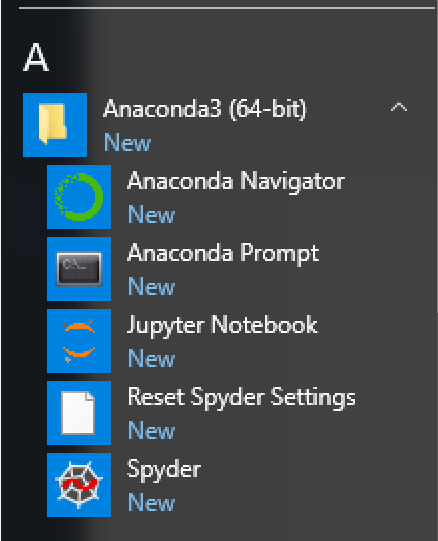

Installation Guide for Windows¶
Installation using Conda¶
The following steps have been checked only with windows 10 but should work with previous versions as well.
We highly recommend that all new users install SpectroChemPy interface via Conda. You can install Spectrochempy in a dedicated environment (recommended, steps 4 and 5. below). You can also use your base environment or an existing environment (then skip steps 4 and 5.)
Open a command prompt (Select the Start button and type cmd), or preferably open the Anaconda Prompt in the Anaconda start Menu.
Update conda (yes, even if you have just installed the distribution…):
(base) C:\<yourDefaultPath>> conda update conda
where
<yourDefaultPath>is you default workspace directory (often:C:\Users\)Add channels to get specific packages:
(base) C:\<yourDefaultPath>> conda config --add channels conda-forge (base) C:\<yourDefaultPath>> conda config --add channels spectrocat (base) C:\<yourDefaultPath>> conda config --add channels cantera
Recommended: you can create a dedicated environment. We will name it
scpyin this example but, of course, you can use whatever name you want.(base) C:\<yourDefaultPath>> conda create --name scpy
Switch to this environment. At this point,
(scpy)should appear before the prompt instead of(base).(base) C:\<yourDefaultPath>> conda activate scpy (scpy) C:\<yourDefaultPath>>
Note
You can make the scipy environment permanent by creating and using the following batch file (.bat)
@REM launch a cmd window in scpy environment (path should beadapted) @CALL CD C:\<yourWorkingFolder> @CALL CMD /K C:\<yourAnacondaFolder>\Scripts\activate.bat scpy
This script, where
<yourAnacondaFolder>is the installation directory of your Miniconda/Anaconda distribution will open a command prompt in C:\<yourWorkingFolder> with thescpyenvironment activated.Save the .bat file, for instance in
C:\<yourAnacondaFolder>Scriptsactivate-scpy.bat, create a shortcut, name it, for instance,Anaconda prompt (scpy)and place it in an easily accessible place (e.g. the Windows Startmenu Folder).Install SpectroChemPy
The conda installer has to solve all packages dependencies and is definitely a bit slow. So we recommend to install mamba as a drop-in replacement via:
(scpy) C:\<yourDefaultPath>> conda install mamba
To install a stable version of spectrochempy, then you just have to do :
(scpy) C:\<yourDefaultPath>> mamba install spectrochempy
or if you rather prefer not to use mamba:
(scpy) C:\<yourDefaultPath>> conda install spectrochempy
This can take time, depending on your python installation and the number of missing packages.
If you prefer to deal with the latest development version, you must use the following command to install from the spectrocat/label/dev channel instead of the
spectrocatchannel:(scpy) C:\<yourDefaultPath>> mamba install -c spectrocat/label/dev spectrochempy
{kind=link}
Installation using pip¶
If you prefer to use pip, here are the installation steps. We assume that you have a working installation of python > 3.6.
Open a terminal and update pip:
C:\<yourDefaultPath>> py -m pip install --user --upgrade pip
Creating a virtual environment
C:\<yourDefaultPath>> py -m venv env C:\<yourDefaultPath>> .\env\Scripts\activate
Check that you in the correct environment
C:\<yourDefaultPath>> where python ...\env\Scripts\python.exe
Install all required packages
The easiest way to achieve this is to use the requirements.txt present on our github repository or in the present documentation (<link>)
C:\<yourDefaultPath>> py -m pip install -r https://www.spectrochempy.fr/downloads/requirements.txt
Install spectrochempy from pypi
C:\<yourDefaultPath>> python -m pip install spectrochempy
Check the Installation¶
Check the installation by running a IPython session by issuing in the terminal the following command:
C:\<yourDefaultPath>> ipython
Then execute the following command:
In [1]: from spectrochempy import *
If this goes well, you should see the following output, indicating that Spectrochempy is likely functional !
SpectroChemPy's API - v.0.2.16
© Copyright 2014-2021 - A.Travert & C.Fernandez @ LCS
The recommended next step is to proceed to the User’s Guide.